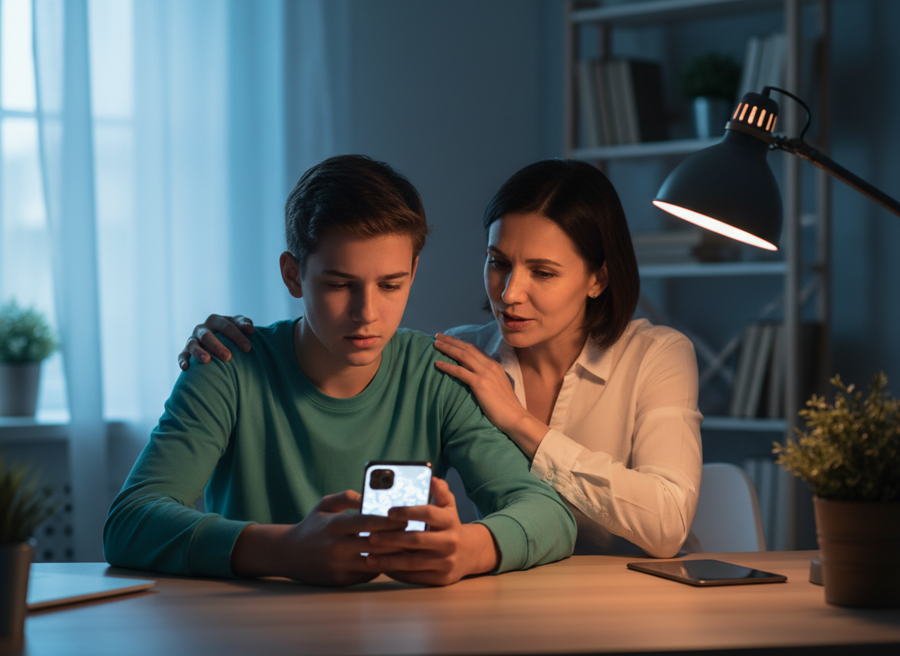

Reconhecer
Observe sinais de humilhação, exclusão, ameaça ou sofrimento persistente.
Campanha permanente de cuidado
Bullying, cyberbullying e o uso excessivo do celular afetam relações, aprendizagem e bem-estar. Aprenda a reconhecer sinais, agir com respeito e encontrar apoio.
Informação clara para estudantes, famílias e educadores.
Impacto começa na atitude
Reconhecer a violência, proteger a privacidade e buscar equilíbrio no uso da tecnologia são atitudes que fortalecem toda a comunidade.
Ver guia de prevençãoObserve sinais de humilhação, exclusão, ameaça ou sofrimento persistente.
Interrompa o compartilhamento, preserve evidências e procure uma rede segura.
Escute sem julgamento e ajude a pessoa a encontrar o próximo passo.
Comece por aqui
Escolha um caminho e encontre conteúdos objetivos para agir com segurança.
Em foco
Uma comunidade protetora não espera a violência crescer. Ela observa mudanças, interrompe brincadeiras que machucam, preserva evidências e encaminha cada situação para um adulto ou serviço responsável.
Ver atitudes práticasConteúdo educativo
Conhecimento ajuda a diferenciar conflito, violência e pedido de ajuda.

Na escola e na comunidade
Agressões repetidas ou intimidações que causam medo, humilhação, exclusão ou sofrimento.
Ler sobre bullying
No ambiente digital
Violência praticada por mensagens, redes sociais, jogos ou outros espaços conectados.
Ler sobre cyberbullying
Bem-estar e tecnologia
Ansiedade ou desconforto intenso associados à falta de acesso ao celular ou à internet.
Ler sobre nomofobiaPara compartilhar
Teste seus conhecimentos e leve uma informação segura para sua rede.
Você não precisa enfrentar isso sozinho
O Mural reúne contatos, orientações e um espaço de solicitação de acolhimento pedagógico ou de saúde mental.